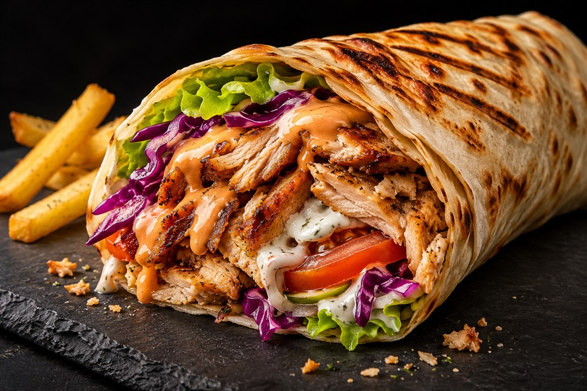
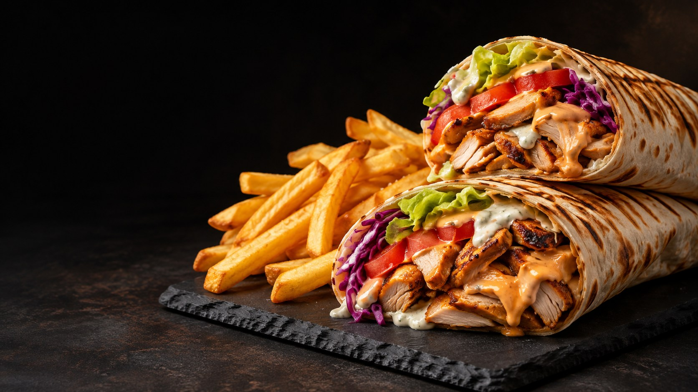

PopularăÎn lipie · 700 g
Shaorma mare
Carne, cartofi, legume și sosuri, într-o lipie pe măsura poftei.
36 lei
Comandă
Shaorma & kebab Sibiu
Shaorma, kebab și gust bun.
Porții generoase, aproape de tine.
Din Sibiu, cu poftă.
Noi suntem La Andrei
O lipie rumenită. Carne, cartofi, legume și sosuri. Uneori, tot ce îți trebuie e o shaorma bună și o porție generoasă.
Ne găsești în Sibiu, la Complex Aida. Treci pe la noi sau comandă prin Bolt Food. De poftă ne ocupăm noi.
Hai să ne cunoaștemNe vedem La Andrei
Foamea știe drumul. Acum îl știi și tu.